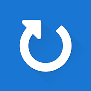
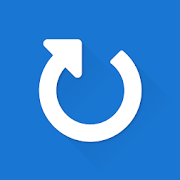

Essentially, Free Open Source Software is software that belongs to the community. It's free in that it doesn't belong to an individual or a corporation. A person or team made it, but anyone can take what they've made and add to it, or make their own version. It belongs to the community.
This also means, unlike "free" products by corporations or capitalists, there's no profit motive. There's no ads, no subscriptions, and no tracking and selling your data.
 Geometric Weather (4.5 Stars): "Geometric Weather is a light and powerful weather app that provides you with real-time temperature, air quality, 15-days weather forecast, and accurate time-sharing trends." Source code
Loop Habit Tracker(4.8 Stars): "Loop helps you create and maintain good habits, allowing you to achieve your long-term goals. Detailed charts and statistics show you how your habits improved over time. The app is completely ad-free, open source and it respects your privacy." Source code
Geometric Weather (4.5 Stars): "Geometric Weather is a light and powerful weather app that provides you with real-time temperature, air quality, 15-days weather forecast, and accurate time-sharing trends." Source code
Loop Habit Tracker(4.8 Stars): "Loop helps you create and maintain good habits, allowing you to achieve your long-term goals. Detailed charts and statistics show you how your habits improved over time. The app is completely ad-free, open source and it respects your privacy." Source code